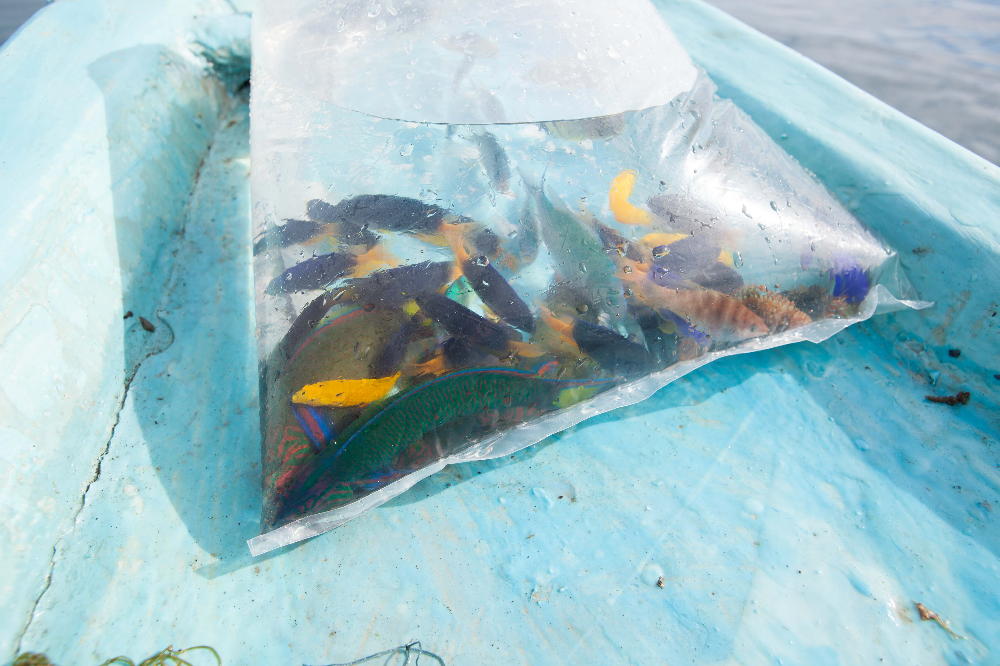

MIDDLEMAN
Middlemen live sandwiched between two worlds, the harvesters on one end and the exporters on the other. In other words, they have a lot of people to keep happy. Middlemen were initially the ones who introduced fishers to using cyanide, a toxic chemical sprayed on reefs to stun fish. This chemical allowed fishermen to increase the volume of fish caught, and the amount they could then sell through the supply chain. Middlemen encouraging fishers to use cyanide highlights the name of the game in the marine aquarium trade: to pass along as many fish as possible, as quickly as possible. Over the past decade, this mentality has been changing as NGOs and, in some cases, conscientious exporters are training both fishers and middlemen better harvesting and handling practices that improve survival rates, rendering high-volume extraction unnecessary.
Sarli, the middleman who works with the Sama-Bajau fishers in Toropot, lives on Banggai Island in Central Sulawesi. He is a 6-hour boat ride away from his fishers, who specialize in collecting blue tang, and he visits them every three weeks to collect their harvested fish. Unlike some middlemen our team interviewed, Sarli feels that the fishers are his family and sees Toropot as his second home. He often spends several nights in the homes of his fishers and their families enjoying meals together and talking shop. The fishers in turn have much respect and affection for Sarli, who they feel pays them fair wages and treats them with respect. This is not the case with all fisher-middlemen relationships, and often fishers can be taken advantage of and paid unfairly for the life-threatening work they do.
Sometimes Sarli will join his fishermen on their collection days to oversee their harvesting techniques. Again, this is not true of all middlemen, who often only have a transactional relationship with the fishers and never know, nor care in what manner the fish they sell were caught. Once Sarli collects the fish, he packs them in oxygenated bags stacked in Styrofoam containers and loads them on a small ferry- boat for the 6-hour ride back to Banggai Island, where the great leg of transport begins. There, he will re-oxygenate and re-pack the fish to prepare them for another 9-hour boat ride back to the mainland of Central Sulawesi in Luwuk. He will accompany the fish to Luwuk, repack them a third time, and send them on their way by plane. The fish fly another six hours to Banyuwangi, East Java where the regional middleman awaits. This middleman aggregates fish from many local middlemen and sends them to the exporter in Jakarta or, more often, Denpasar, Bali, the largest MAT export hub in Indonesia. Here the fish await the final step of the export side of the supply chain in the hands of the exporters themselves.
-

Hookah air compressor
Hookah diving is common in Indonesia for aquarium fishermen -

A Collector's Bounty
While looking for the Blue Tang, fishermen will collect any fish of value -

I found Dory!
She's been here the whole time!